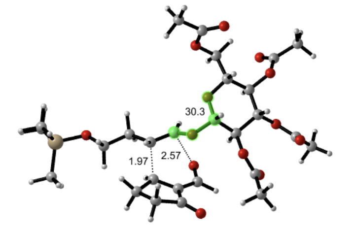

Computational Organic
Chemistry Research
I currently do computational organic chemistry research in the lab of Prof. Ken Houk, a pioneer in this field of research and one of the top 100 most cited chemists in the world. Using Gaussian to perform quantum mechanical calculations, I have been studying the role of a sugar derivative in transferring stereochemical information in the Diels-Alder reaction. This project is in collaboration with synthetic chemistry Prof. Neil Garg at UCLA.
